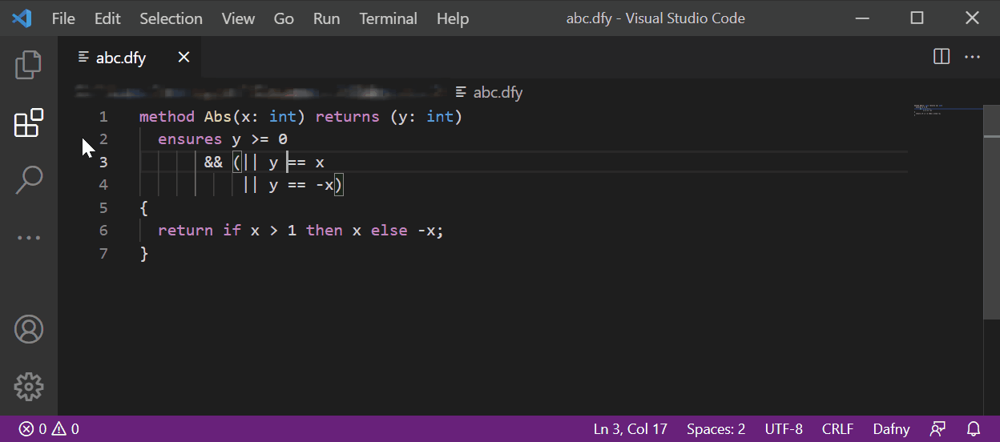

Dafny is a verification-ready programming language. As you type in your program, Dafny's verifier constantly looks over your shoulder, flags any errors, shows you counterexamples, and congratulates you when your code matches your specifications. When you're done, Dafny can compile your code to C#, Java, JavaScript or Go (more to come!), so it can integrate with your existing workflow.
Dafny will give you assurance that your code meets the specifications you write, while letting you write both code and specifications in the Dafny programming language itself. Since verification is an integral part of development, it will thus reduce the risk of costly late-stage bugs that are typically missed by testing.
Dafny has support for common programming concepts such as classes and trait inheritance, inductive datatypes that can have methods and are suitable for pattern matching, lazily unbounded datatypes, subset types e.g. for bounded integers, lambdas, and immutable and mutable data structures.
Dafny also offers an extensive toolbox for mathematical proofs, such as unbounded and bounded quantifiers, calculational proofs, pre- and post-conditions, termination conditions, loop invariants, and read/write specifications.
Try it out by installing the Visual Studio Code extension, which installs all dependencies apart from .NET 6. To get a better sense of Dafny's capabilities, follow the tutorial.
Development happens on GitHub.